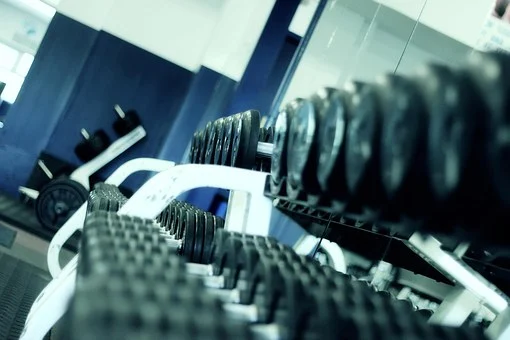
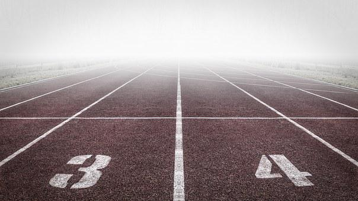

Web-tekniikat
Oulu area & Exercise
- Vocatum
- Liikku
- Liikuntakeskus Hukka
- Liikuntakeskus Voitto
- Sportello Fit
Gyms

- Fressi Oulu
- Liikunta Pomppu Oy
- Ouluhalli
- Kaakkurin liikuntamaa
- 
Other places to sport
Good to know
Oulu provides a wide range of sports and exercise facilities for residents of all ages. Various facilities are located both in the centre and in different parts of the city. They are easily accessible and always within easy reach. The City of Oulu provides – children, young people, adults and the elderly – guided activities for residents in gyms, swimming pools, and facilities mainly from September to May.
Good to know too
There are about 250 active sports clubs offering a wide range of sports for people of all ages and skills, from beginners to top athletes. The clubs organise several sports and exercise events every year. The City of Oulu cooperates closely with the clubs.